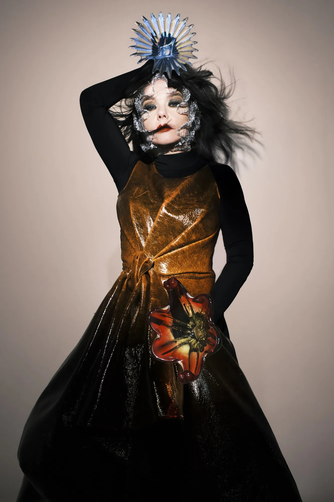

Informações e curiosidades sobre a cantora!

Björk Guðmundsdóttir (21 de novembro de 1965), conhecida simplesmente por Björk, é uma cantora, compositora, produtora musical e atriz islandesa. Com seus trabalhos aclamados pela crítica, Björk já venceu o Polar Music Prize (conhecido como o "Prêmio Nobel da Música"), 5 BRIT Awards, e 4 MTV Video Music Awards. Além disso, ela foi indicada a 16 prêmios Grammy, 1 Oscar e 2 Globos de Ouro. Por sua atuação no filme, Dançando no Escuro (2000), ela ganhou o Prêmio de melhor atriz no Festival de Cannes de 2000. Ela também foi condecorada pelo governo da Islândia com um Order of the Falcon.
Björk foi classificada na 36ª posição na lista das "As 100 Maiores Mulheres do Rock and Roll" do VH1 e 8ª posição na lista da MTV das "22 Melhores Vozes da Música". A Rolling Stone, a classificou em 64ª lugar em sua lista das "200 maiores cantoras de todos os tempos" e em 81ª lugar na lista de "maiores compositores de todos os tempos". Uma exposição dedicada a carreira de Björk foi realizada no Museu de Arte Moderna de Nova York em 2015.
Björk nasceu e foi criada em Reykjavik, capital da Islândia. Seus pais divorciaram-se quando Björk era criança e ela passou a juventude morando com a mãe, o padrasto e os meio irmãos. Aos seis anos, Björk começou a estudar piano clássico e flauta. Após um recital escolar em que Björk cantou "I Love to Love" de Tina Charles, seus professores enviaram uma gravação dela cantando a música para a estação de rádio RÚV, que na época era a única estação de rádio da Islândia. A gravação foi transmitida nacionalmente e, após ouvi-la, um representante da gravadora Fálkinn ofereceu a Björk um contrato de gravação. Seu disco de estreia, Björk, foi gravado quando ela tinha 11 anos e foi lançado na Islândia em dezembro de 1977.
Björk participou de muitas bandas antes de sua carreira solo. Foram elas: "Spit and Snot", uma banda feminina de punk-rock, "Exodus", uma banda de jazz que não durou muito, "Jam-80 foi" um projeto experimental que lhe rendeu uma turnê, Tappi Tíkarrass, "Rokka Rokka Drum", e depois uma banda de rock gótico chamada "KUKL".
Após o nascimento de seu primeiro filho, em 1986, Björk começa sua trilha experimental com a banda The Sugarcubes, o estilo e irreverência da banda conquistariam o selo independente inglês One Little Indian. O primeiro single da banda "Ammæli" ou (Birthday, em inglês) foi lançado em 1987, chamando a atenção da crítica da música Alternativa. O primeiro álbum do The Sugarcubes, chamado, Life’s Too Good, foi lançado em 1988. Na época, a banda criou um selo e editora intitulado, Smekkleysa, com o intuito de gravar outras bandas e publicar poesias, tanto de artistas da Islândia como de fora. O segundo álbum da banda, Here, Today, Tomorrow, Next Week!, lançado em 1989, não repercutiu tanto como o anterior. Em 1990, Björk participou da a gravação de Gling-Gló, com o trio tradicional de jazz da Islândia, Trio Guðmundar Ingólfssonar.
Ela também contribuiu com os vocais para o álbum ex:el do 808 State, com quem ela cultivou seu interesse em house music. Ela contribuiu com os vocais nas músicas "Qmart" e em "Ooops", que foi lançado como single no Reino Unido em 1991. Neste ponto, Björk decidiu deixar a banda e se mudar para Londres, para seguir carreira solo, mas seu contrato incluía a produção de um último álbum, Stick Around for Joy (1992), com uma turnê promocional subsequente, que ela concordou em fazer. Ela ainda participou de duas faixas da trilha sonora do filme irlandes Remote Control (1992).
Em 5 de julho de 1993, Björk iniciou a carreira solo com o álbum "Debut". Co-produzido por Nellee Hooper, se destaca como um dos principais álbuns de trip-hop que iniciaram o movimento. O single “Human Behaviour”, uma faixa dançante com um ritmo de guitarra sampleado do cantor e compositor brasileiro, Antônio Carlos Jobim, tornou-se seu primeiro hit internacional, alcançando o terceiro lugar na parada de singles do Reino Unido.
No Brit Awards de 1994, Björk ganhou os prêmios de Melhor Artista Feminina Internacional e Melhor Revelação Internacional. Em setembro de 1994, Björk lançou The Best Mixes from the Debut (For All the People Who Don't Buy White Labels), uma compilação de remixes que apoiava o uso das White-labels (Gravadoras Independentes, do inglês, etiqueta-branca ou selo-branco). No mesmo ano, ela compôs "Bedtime Story", faixa do sexto álbum da cantora Madonna, Bedtime Stories.
Lançado em 13 de junho de 1995, Post, trouxe elementos que acabam tornando-o um álbum de vanguarda. A mistura de jazz, música eletrônica, e ainda caminhando pelo rumo do trip-hop, rendeu a Björk mais um trabalho aclamado pela critica. Os singles do álbum, "Army of Me" e "It's Oh So Quiet", se tornaram um dos maiores hits de sua carreira Post foi um sucesso comercial e vendeu mais de 3 milhões de cópias, sendo certificado como platina nos EUA.
Em 2003, o álbum ficou 373ª posição na lista da revista Rolling Stone dos "500 melhores álbuns de todos os tempos".
Lançado em 20 de setembro de 1997, o álbum Homogenic, que começou a ser produzido em sua casa em Londres, mas foi interrompido após ela sofrer a uma tentativa de assassinato por um perseguidor; Procurando um lugar seguro, Björk se mudou para uma casa no sul da Espanha, onde finalizou álbum.
A união de elementos "high-tech" e cordas traduzem a melancolia e introspecção de sua vida e sua terra natal, com vulcões, terremotos e luzes das cidades, ficando bem evidente em seu primeiro videoclipe da canção "Jóga", dirigido por Michel Gondry, cheias de paisagens islandesas e terminando no coração da cantora.
Homogenic recebeu ampla aclamação da crítica. Liderou a parada de álbuns da Irlanda, chegou ao número 28 na Billboard 200 e ao número 4 na parada de álbuns do Reino Unido.
Em 27 de agosto de 2001, Björk lançou o álbum, Vespertine, que trouxe o som experimental de Matmos, DJ Thomas Knak, e a harpista Zeena Parkins. Fontes líricas incluem as obras do poeta americano EE Cummings, o cineasta independente americano Harmony Korine e a dramaturga inglesa Sarah Kane. Vespertine gerou três singles: "Hidden Place", "Pagan Poetry" e "Cocoon".
Vespertine vendeu dois milhões de cópias mundialmente, até o final de 2001. Björk embarcou em uma turnê de teatros e óperas na Europa e na América do Norte, acompanhado pelos músicos Matmos, Zeena Parkins e um coral da Gronelândia.
Em 31 de agosto de 2004, Björk lança o álbum Medúlla.[58] Durante a produção, Björk decidiu que o álbum seria inteiramente de vocais de base. No entanto, este plano inicial não se materializou exatamente dessa forma, como a maioria dos sons do álbum são, na verdade, criada por vocalistas (embora muitas vezes estes sons são eletronicamente distorcidos).
Um vídeo de "Where Is the Line", foi filmado em colaboração com a artista islandesa Gabriela Fridriksdóttir, no final de 2004, e foi lançado exclusivamente no DVD Medúlla Videos.
Seu sexto álbum de estúdio, Volta, foi lançado em 1º de maio de 2007; Foi escrito e produzido pela própria Björk e os produtores Timbaland, Antony Hegarty e Sjón. Volta estreou no número nove na Billboard 200, tornando-se seu primeiro Top 10 nos EUA, com 43.000 cópias vendidas na primeira semana.
Entre 2008 e 2009, Björk fez uma turnê mundial de 18 meses, participando de muitos festivais; Com essa turnê ela retornou para a América Latina depois de nove anos, realizando shows no Rio de Janeiro, São Paulo, Curitiba,[68] Guadalajara, Bogotá, Lima, Santiago e Buenos Aires. Em 23 de junho de 2009, ela lançou o álbum, Voltaïc, uma compilação de trabalhos feitos durante a Volta Tour entre 2007 e 2008.
Lançado em 5 de outubro de 2011, Biophilia, foi anunciado como o primeiro "álbum de aplicativo",[71] um projeto multimídia lançado junto com uma série de aplicativos de 10 aplicativos, produzidos para o iPad da Apple, que ligam os temas do álbum.
Björk descreveu o projeto como uma espécie de ópera instrumental etérea.[73] O título é uma representação do senso de conexão com a natureza e outras formas de vida. Durante seu desenvolvimento, Björk cantou algumas canções do álbum no Festival Internacional de Manchester.[74] O álbum recebeu aclamação da crítica e foi nomeado um dos melhores álbuns de 2011 por diversas publicações. "Crystalline", foi lançado como single principal em 28 de junho de 2011, acompanhado por seu videoclipe.
Em 13 de janeiro de 2015, Björk anunciou que seu nono álbum, Vulnicura, estava para ser lançado e foi surpreendida quando em 17 de janeiro, todas as músicas vazaram na internet, o que levou a uma antecipação do lançamento para o dia 20 de janeiro de 2015, quando o álbum foi disponibilizado no iTunes. O álbum foi produzido e co-escrito em parceria com a venezuelana Alejandra Ghersi, conhecida como Arca, e com o inglês Bobby Krlic, conhecido como The Haxan Cloak. O melancólico álbum contém 9 faixas, 7 contendo uma duração extensa de 6 a 10 minutos. As letras relatam tanto o processo do fim do namoro de Björk com Matthew Barney.
Lançado em 24 de novembro de 2017, Utopia, é o décimo álbum de estúdio solo de Björk e o mais longo, tendo 71 minutos e 38 segundos ao longo de 14 faixas.
Para a produção do álbum, Björk novamente colaborou com Arca. Utopia tem um conceito oposto ao de seu antecessor, o Vulnicura. A própria Björk disse que Utopia é "o paraíso", enquanto Vulnicura é "o inferno", e o site de crítica musical Pitchfork, anunciou que "Björk está cheia de amor novamente".Ela descreveu o trabalho como seu "álbum Tinder" e declarou que "é sobre essa procura (pela utopia) e também estar apaixonado."
Utopia foi indicado ao prêmio de Melhor Álbum de Música Alternativa no Grammy Awards de 2018, tornando-se sua décima quinta indicação ao Grammy. Em 12 de novembro de 2018, Björk anunciou a turnê, Cornucopia; Ela declarou que o show é "onde o acústico e o digital apertam as mãos."
Seu décimo álbum de estúdio, Fossora, foi lançado em 30 de setembro de 2022. Foi apoiado por quatro singles: "Atopos", "Ovule", "Ancestress" e a faixa-título do álbum. Também em setembro de 2022, Björk lançou o podcast, Björk: Sonic Symbolism, onde ela "discute as texturas, timbres e paisagens emocionais de cada um de seus álbuns" com seus amigos, o escritor Oddný Eir e o musicólogo Ásmundur Jónsson.
Fossora, foi indicado ao Grammy de 2023 para "Melhor Álbum de Música Alternativa".[112] Em 21 de novembro de 2023, Björk lançou o single "Oral", com participação de Rosalía. Os lucros desta música foram doados à Aegis, uma organização ambiental que Björk fundou com outros ativistas islandeses para impedir a piscicultura intensiva que está destruindo os fiordes, degradando os ecossistemas locais.
Um álbum melancólico, e extremamente genial. Sem sombra de dúvidas o álbum mais íntimo da carreira dela, contendo faixas extremamente pesadas, com clipes que mesmo com uma produção simples, ainda conseguem fazer o ouvinte sentir o que a cantora estava sentindo. Minha música favorita desse álbum é "Lionsong" (também gosto muito do clipe, ele é meu favorito!).
VespertineO total contrário de Vulnicura. Vespertine é um álbum que cobre a experiência da cantora ao se apaixonar por Matthew Barney. Suas faixas tem umas das minhas músicas favoritas, "Harm of Will".
HomogenicSem dúvidas um dos álbuns mais aclamados da carreira dela. Diferente de Vulnicura ou Vespertine, não consigo dar um "tema" epecífico a ele. Pessoalmente, minh faixa favorita é "Unravel".
Homogenic(10 pelo Pitchfork)
Post (10 pelo Pitchfork)
(8.6 pelo Pitchfork)
Vulnicura1. Lionsong
2.Unravel
3.Harm of Will
4.Play dead
5.Possibly Maybe